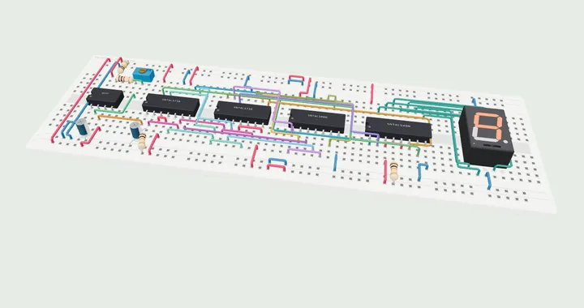

Vista del montaje 3D 1 protoboard · 5 VPráctica 3.2 · Actual
Contador de 9 a 0
Contador BCD descendente con dos 74LS73A. Arranca en 9 sin PRESET, baja hasta 0 y regresa solo a 9 con tres compuertas NAND.
Tu próxima conexión empieza aquí0%
Empezar montaje